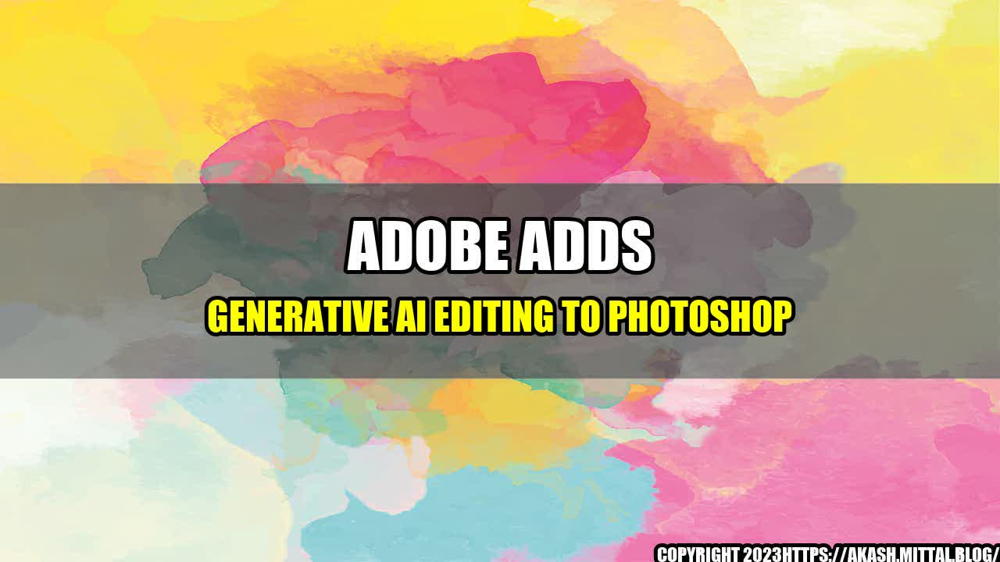

The Magic Behind Generative AI Editing in Photoshop

Do you remember the first time you used Photoshop? Maybe you were a design student, or perhaps you were working on a project for school or work. Whatever the case may be, you probably felt a sense of awe as you explored the various tools and features of this powerful software. But as you got deeper into your work, you may have found yourself feeling frustrated by the time-consuming and often tedious process of editing.
That's where Adobe's latest innovation comes in. They have added generative AI editing to Photoshop, and it is nothing short of magical. Through the use of machine learning algorithms, Photoshop can now analyze your images and make intelligent suggestions for edits, effectively saving you time and energy.
Generative AI Editing
So what does generative AI editing actually look like in practice? Let's take a look at a few examples:
- Noise Reduction: If you have ever tried to take a photo in low light conditions, you know how difficult it can be to achieve a clear and crisp image. But with generative AI editing, Photoshop can analyze the areas of your photo that are noisy or blurry and automatically apply adjustments to improve the overall quality of the image.
- Color Adjustment: Have you ever taken a photo that looked great on your camera's screen, only to discover later that the colors were off? Photoshop can analyze the colors in your photo and suggest adjustments to achieve a more balanced and accurate representation of the scene.
- Content-Aware Fill: This is one of the most magical features of generative AI editing. Say you have a photo of a beautiful sunset, but there is a distracting object in the foreground. Through the use of machine learning algorithms, Photoshop can analyze the surrounding pixels and seamlessly remove the unwanted object, leaving you with a stunning image.
The Benefits of Using Generative AI Editing
So why should you consider using generative AI editing in your work? Here are a few benefits:
- Increased Efficiency: By taking care of time-consuming edits for you, generative AI editing allows you to focus on the more creative aspects of your work. This can save you hours of tedious editing time.
- Improved Quality: In many cases, generative AI editing can actually improve the quality of your images beyond what you could achieve through manual edits.
- Cost Savings: If you are working on a tight budget, generative AI editing can be a cost-effective solution. Rather than hiring a professional editor or spending money on expensive editing software, you can achieve professional-level results using Photoshop's AI features.
Final Thoughts
Generative AI editing is a game-changer for anyone who works with images on a regular basis. By harnessing the power of machine learning algorithms, Photoshop can save you time, improve the quality of your work, and even save you money in the long run.
But don't just take our word for it. Try it out for yourself and see the magic of generative AI editing in action!
Reference URLs and Hashtags
Curated by Team Akash.Mittal.Blog
Share on Twitter Share on LinkedIn